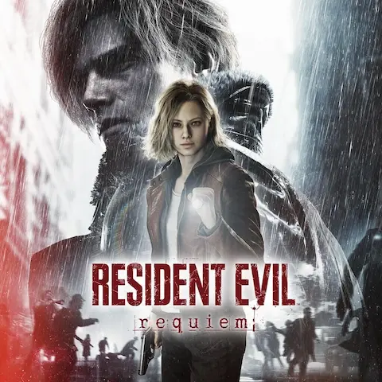

Capcom ha conseguido algo que parecía difícil después de Resident Evil 8 Village: volver a generar hype masivo antes del lanzamiento. RE9 Requiem llegó ayer, 27 de febrero, a PS5, Xbox Series X|S, PC y Nintendo Switch 2 simultáneamente. La premisa es sencillamente deliciosa: Raccoon City, la ciudad que todos recordamos como el escenario donde todo se fue al traste en RE2 y RE3, ha sido destruida por bombardeos nucleares y sirve ahora de escenario post-apocalíptico para una nueva pesadilla de Capcom.
La protagonista es Grace Ashcroft, investigadora del FBI e hija de Alyssa, la periodista de Resident Evil 7. Capcom mete aquí un hilo de lore que conecta la saga de una manera que no esperaba nadie y que, según los poquísimos agraciados con copias anticipadas, tiene mucho más peso narrativo de lo habitual en la franquicia. Leon Kennedy también aparece. La combinación pinta bien sobre el papel, aunque "pinta bien sobre el papel" también lo podría haber dicho alguien antes de RE6 y ya sabemos cómo terminó aquello.
El problema del día de lanzamiento: los spoilers. Copias anticipadas en circulación desde días antes, capturas filtradas por todas partes y un livestream en Twitch que duró unos veinte minutos antes de que Capcom lo cortara de raíz. Si tienes pendiente jugar Requiem y aún no has empezado, pon internet en modo avión directamente. Los foros están siendo un campo minado. Personalmente estoy al borde del estado de emergencia friki total hasta que pueda meterle unas horitas esta misma tarde.